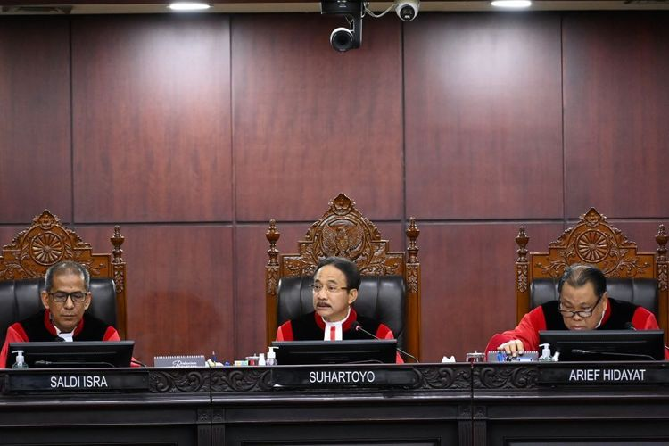

JAKARTA, KOMPAS.com - Mahkamah Konstitusi (MK) telah memutus menolak permohonan sengketa Pilpres 2024 yang diajukan Anies Baswedan-Muhaimin Iskandar dan Ganjar Pranowo-Mahfud MD dalam sidang pembacaan putusan, Senin (22/4/2024).
MK menyatakan seluruh dalil permohonan sengketa itu tidak beralasan menurut hukum, sehingga majelis hakim menolak permohonan para pemohon itu seluruhnya.
Tiga hakim, yaitu Saldi Isra, Enny Nurbaningsih, dan Arief Hidayat, menyampaikan ketidaksetujuan melalui pendapat berbeda (dissenting opinion), tetapi jumlah mereka kalah banyak (3 dari 8) dengan mayoritas hakim yang setuju menolak permohonan Anies dan Ganjar..
Apa saja poin-poin penting yang termaktub dalam putusan kemarin? Berikut rangkumannya:
1. Pencalonan Gibran dianggap tidak bermasalah
Dalam gugatannya ke MK, kubu Anies Baswedan-Muhaimin Iskandar menilai Gibran tak memenuhi syarat administrasi, sebab KPU RI memproses pencalonan Gibran menggunakan Peraturan KPU (PKPU) Nomor 19 Tahun 2023.
Dalam PKPU itu, syarat usia minimum masih menggunakan aturan lama sebelum putusan MK, yakni 40 tahun.
Dewan Kehormatan Penyelenggara Pemilu (DKPP) juga telah menyatakan seluruh komisioner KPU RI melanggar etika dan menyebabkan ketidakpastian hukum terkait peristiwa itu.
Namun, MK menilai, KPU telah berinisiatif untuk memberi tahu adanya perubahan syarat usia capres-cawapres berdasarkan Putusan MK, melalui Surat Nomor 1145/PL.01-SD/05/2023 kepada Pimpinan Partai Politik Peserta Pemilu 2024.
KPU juga dinilai telah memberi tahu bahwa mereka tidak bisa segera mengubah Peraturan KPU terkait syarat usia capres-cawapres, karena untuk melakukan itu mereka harus berkonsultasi dengan DPR dan pemerintah sedangkan DPR masih dalam masa reses saat itu.
MK menilai, KPU terikat dengan jadwal dan tahapan pencalonan presiden dan wakil presiden meskipun wajib menerapkan putusan MK yang berpengaruh terhadap norma pencalonan itu sendiri.
2. Endorsement Jokowi bukan pelanggaran, tak ada politisasi bansos
MK menegaskan bahwa pemilu sebagai sebuah kompetisi tidak akan pernah menjadi pertandingan yang seimbang, terlebih jika terdapat kontestan petahana atau diasosiasikan dengan petahana.
Oleh karena itu, Mahkamah menganggap "endorsement" yang diberikan Presiden Joko Widodo terhadap Prabowo Subianto-Gibran Rakabuming tidak melanggar hukum, walaupun bermasalah secara etika karena presiden seharusnya diletakkan pada posisi yang menaungi seluruh warga negara.
MK juga menganggap pengaruh politisasi bantuan sosial terhadap pemenangan Prabowo-Gibran tidak terbukti dalam persidangan.

Presiden Republik Indonesia (RI) Joko Widodo bersama Menteri Pertanian (Mentan) Andi Amran Sulaiman saat meninjau panen raya jagung di Desa Kotaraja, Kecamatan Dulupi, Kabupaten Boalemo, Provinsi Gorontalo, Senin (22/4/2024).(DOK. Humas Kementan)
MK berpandangan, tidak ada kejanggalan dan pelanggaran peraturan dalam penggunaan anggaran perlindungan sosial, khususnya bansos, yang digelontorkan pemerintah.
Pasalnya, pelaksanaan anggaran telah diatur secara jelas mulai dari perencanaan, penganggaran, pelaksanaan, dan pertanggungjawabannya.
3. Dalil TSM mentah, Anies-Ganjar saling lirik dan tertawa
Anies dan Ganjar berulang kali melempar senyum ketika hakim menolak dalil-dalil mereka soal keberpihakan penjabat kepala daerah dan ASN dalam masa kampanye Pilpres 2024.
Semua kasus-kasus yang disodorkan itu, mulai dari dugaan mobilisasi aparat desa dan pendidikan sampai dugaan pelanggaran kampanye oleh Menteri Perdagangan Zulkifli Hasan, mentah oleh Mahkamah Konstitusi (MK).
Mahkamah menyebut, dalil-dalil berkaitan dengan pelanggaran secara terstruktur, sistematis, dan masif itu "tidak beralasan menurut hukum", kalimat yang selalu membuat Anies dan Ganjar mengumbar tawa.
Pada momen ketika MK menyatakan dalil dugaan mobilisasi aparat desa di Kabupaten Bogor tidak beralasan menurut hukum, Anies segera menengok ke sisi kanan ke arah Ganjar yang pada saat bersamaan juga menengok ke arahnya.
Anies tersenyum lebar sembari menaikkan kedua alisnya kepada Ganjar. Sementara itu, Ganjar tersenyum lebar sebelum kemudian membetulkan posisi duduknya di ruang sidang.
4. Polemik Sirekap tak berpengaruh
MK juga mementahkan dalil permohonan sepanjang berkaitan dengan dugaan penggelembungan suara melalui Sistem Informasi Rekapitulasi (Sirekap) KPU RI.
Kekacauan input perolehan suara dalam sistem tersebut, ditambah dengan ditutupnya akses Sirekap untuk publik, dianggap tidak berpengaruh terhadap perolehan suara riil, karena Sirekap tidak menjadi alat resmi penghitungan suara.
Walau demikian, MK menegaskan bahwa jelas terdapat masalah yang menimbulkan kegaduhan dan ketidakpastian akibat masalah Sirekap ini, lalu majelis hakim menyarankan agar Sirekap dikelola oleh lembaga lain pada pemilu edisi berikutnya.
Ketua Mahkamah Konstitusi (MK) Suhartoyo (tengah) didampingi Hakim Konstitusi Saldi Isra (kiri) dan Arief Hidayat (kanan) memimpin jalannya sidang putusan perselisihan hasil Pilpres 2024 di Gedung Mahkamah Konstitusi, Jakarta, Senin (22/4/2024). ANTARA FOTO/M Risyal Hidayat/rwa.(ANTARA FOTO/M Risyal Hidayat)
MK juga menyarankan perbaikan teknologi agar Sirekap dapat mencapai tujuan aslinya yakni sebagai alat bantu transparansi dan informasi penghitungan perolehan suara kepada masyarakat.
5. Tiga hakim anggap perlu pemilu ulang
Pertama kali dalam sejarah, majelis hakim konstitusi tidak satu suara dalam putusan terkait sengketa Pilpres 2024.
Hakim Saldi Isra, Enny Nurbaningsih, dan Arief Hidayat, menilai dan meyakini bahwa telah terjadi sejumlah pelanggaran berkaitan dengan intervensi kekuasaan, mulai dari mobilisasi aparat hingga politisasi bansos, yang berpengaruh terhadap hasil Pilpres 2024 di sejumlah wilayah.
Saldi dan Enny juga mengungkit bahwa terdapat kecenderungan Bawaslu tidak menindaklanjuti beberapa laporan terkait dugaan pelanggaran pemilu.
Saldi meyakini terdapat masalah netralitas penjabat (Pj) kepala daerah dan pengerahan kepala desa di Sumatera Utara, Jakarta, Banten, Jawa Tengah, Kalimantan Barat, dan Sulawesi Selatan, sehingga Wakil Ketua MK itu merasa perlu digelar pemungutan suara ulang pada daerah dimaksud.
Sementara itu, Arief Hidayat berpendapat seharusnya Mahkamah memerintahkan KPU RI untuk menghelat pemungutan suara ulang di DKI Jakarta, Jawa Barat, Jawa Tengah, Jawa Timur, Bali, dan Sumatera Utara.